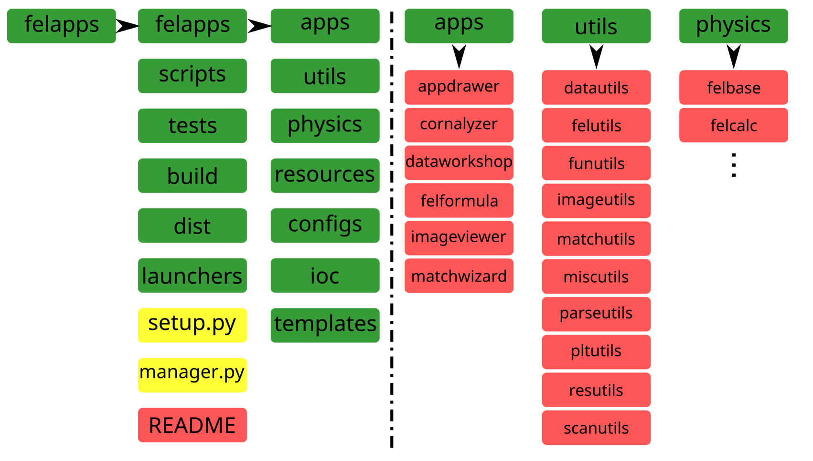
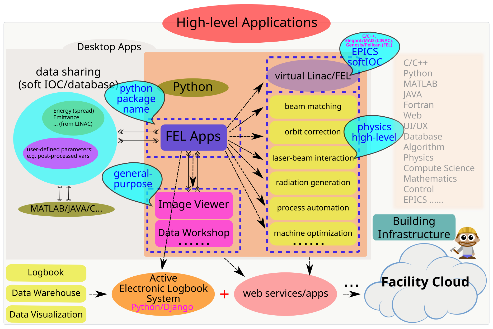

Introduction¶
felapps is a Python package developed for the commissioning of
free-electron laser facility, with the intention of providing useful
tools for the high-level applications, both command line interface (CLI)
and graphical user interface (GUI) are developed/under development.
The package name stands for “FEL High-level Applications”, the core
building language is Python, of the version of 2.7.x. Since
Python is a dynamic interpreted high-level language, pure
object-oriented, various powerful third-party packages support, all
of these great features make it possible to build software system
in a real efficient way.
Below is the basic framework of felapps, general-purpose applications
and specific-purpose applications are both included, specific-purpose
applications mean physics-related, both LINAC and FEL physics.
{kind=link}
To make the package be well-organized, the source code is structured by the following style:
{kind=link}
Building such Python-based software system requires much more effort
to understanding the following key points, but not limited:
- potentially demandings of the FEL facility commissioning;
- software architecture of the system to be like;
- comprehesive relationship between the lower-level control system and the high-level applications system;
- interfaces between various different layers;
- deployment of the entire software system;
- documentations;
- etc.
Picture of felapps¶
{kind=link}
This the incubated picture of felapps package, which including
Desktop Apps and “Web Apps” categories, also indicating the
developing orientation, i.e. to take the advantages of Python,
to build desktop apps to be a eco-system with bundle of well-defined APIs
, to serve the web apps as service infrastructures, the ultimate goal
should be a facility cloud with plenty of services that could be utilized
by the facility, e.g. free-electron laser facility.
Specifically, in the beginning of such vision, Desktop Apps should be
built, into which general-purposed and physics-related
apps/classes/functions/methods should be integrated, just as the picture
illustrates. As for the user, the deployment of felapps should be
easy and robust. The future developing phase should be web-based apps,
to achieve such goal, the suggested beginning point should be the web-based
log book, i.e. to develop an e-log web system by Python, incorporating
the power from Python web-development community.
Progress of felapps¶
Up to now (2016.8), the ready-to-deploy/use apps from felapps are:
Graphical User Interface Apps
appdrawer[1]: alias:runfelapps, portal to reach other GUI apps;cornalyzer: parameters correlation analysis app;dataworkshop: data post-processing app, feeding the datafelformula: efficient calculator for FEL physics;imageviewer: general-purposed profile/CCD monitor/DAQ app; generated byimageviewer‘sAuto-Saveoperation module;latticeviewer[2]: latice online modeling framework;wxmpv: (to be) general data ploting & processing app.
Command Line Interface Apps
Footnotes:
| [1] | App name that could be treated as the command name in the command line interface, to get the app running, the same rule applies to other apps. |
| [2] | (1, 2, 3) Python package beamline is required. |